Gradient Boosting:
How does it work?
9. November 2021

Data Scientist and Co-founder
Legal tech start-up
NLP-powered search engine
Extract meta data from plain text
Index structured data in a search engine
A brief history


(Valiant 1984)
- Probably Approximately Correct Learner (PAC)
- A formal theory of learnability
- Proves broad classes of non-trivial boolean functions are learnable
- Turing Award in 2010
A brief history

(Kearns and Valiant 1989)
- Introduce weak learner
- Performs only slightly better than chance
- Hypothesis boosting problem: weak <=> strong ?
A brief history

(R. E. Schapire 1990)
- Cracks the Hypothesis boosting problem
- Shows weak learner <=> strong learner
- An algorithm constructing a strong learner from weak ones ü§Ø
A brief history

(Freund 1990)
- Youav Freund - Israeli - p.hd. - UC Santa Cruz - 29 years at the time
- Ph.d. thesis
- Implements a much more efficient boosting algorithm
- Trains learners on weighted subsets of the data
- Uses majority voting to predict
A brief history
(R. Schapire and Freund 1995)
- Youav Freund - Israeli - Post Doc at UC San Diego - 34 years at the time
- Robert E Schapire - Post doc at Princeton - 32 years at the time
- Introduces AdaBoost
- First practical boosting algorithm
- Winners of Gödel prize in 2003
A brief history


(J. Friedman, Hastie, and Tibshirani 2000)
- Shows AdaBoost is Stagewise Additive Logistic regression
A brief history
(J. H. Friedman 2001) (Mason et al. 1999)
- Generalizes the boosting concept
- Describes boosting as gradient descent in function space
A brief history

(Chen and He 2015)
- Wins Kaggle contest on Higgs Boson using XGBoost
- XGBoost quickly becomes the most winning algorithm
Why Ensembles of Decision trees?

- Nonlinearity
- Feature interaction:
- 1 layer: \(f(X_i)\)
- 2 layers: \(f(X_i, X_j)\)
- 3 layers: \(f(X_i, X_j, X_k)\)
- Automatic feature selection
- Single Trees overfit
- Combining many small trees …
- .. you get flexible yet robust models
Simulation example

Variance and bias reduction

Boosting

Adaboost
- In theory the two loss functions are equivalent
- On average they produce the same model \(f\)
- For finite samples the exponential loss has drawbacks
- To much weight is given to errors

Adaboost
- Adaboost has trouble on noisy data